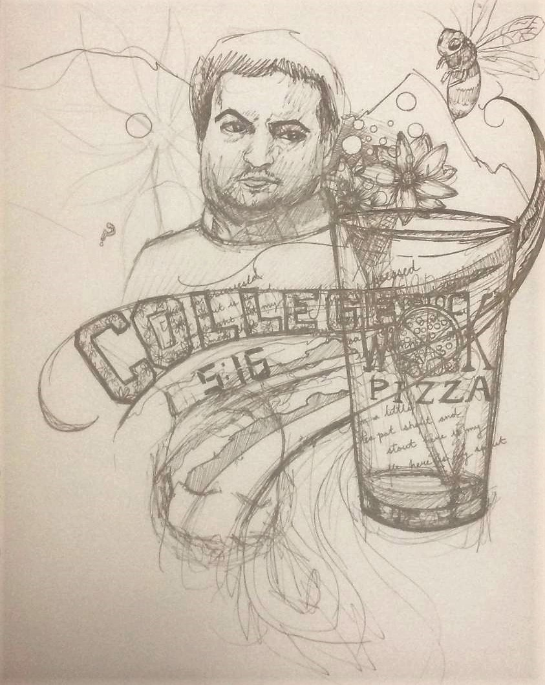

the Bee Lucks Be.
the Bee Lucks Be.
Aside from the fact that (at least for me) being in nature comes with greater literary inspiration, this section has little or nothing to do with the UK's National Parks. So far its just my essays and poems and a guest artist's work displayed here, but if this publication continues I'd like to use this as a space for writers and artists to think and share. Contact me (beccalucks@gmail.com) to submit prose, poetry, philosophy--or anything else you want even if it doesn't start with a P. -Becca
Photo courtesy of the Detroit Institute of Arts. I, Robot came out in 2004
In I, Robot, the movie based on Isaac Asimov’s science fiction stories often involving AI, Will Smith whetted the human imagination to the possible horrors of a humanistic thinking and feeling kind of robotic artificial intelligence.
The moral questions that are arising from machine learning technologies and other new computational fields as the scientific race for ultimate AI continues are varied and many. For example, what happens if machines take over? Is a human/robot war a real possibility? What societal, ethical, equality-based and cultural implications are there to this technology?
And: does it even matter if science will continue to pursue the field?
Yet in essence the ethical issue of AI is quite simple: do we trust ourselves and our society to pursue progress when the technology has real potential for danger and harm?
I believe our answer lies within the questions themselves. U.S. President Donald Trump’s rise to power, Brexit, and a move towards neoliberalism across the globe are all partially a response to advances in machine learning and AI. This is because Russian bots, social media and AI played a role in voter’s experience and confidence in elections everywhere.
As a society, as a human race, we need to learn to differentiate between machine-generated information and human intellect if we are to progress positively using AI. Misinformation (or “disinformation” as Cardiff University’s Professor Richard Sambrook refers to the new era of a social-media-driven news landscape) creates a vast disconnect between the daily news and its consumers. With AI entering and taking over journalism, the media needs to respond with humanity.
Arthur C. Clarke perhaps put it best in describing the potential reality of an unstable ethical future of AI when he said: “It is possible that we may become pets of the computers, leading pampered existences like lapdogs, but I hope that we will always retain the ability to pull the plug if we feel like it.”
Photo courtesy of menabytes.com.
Kurt Vonnegut, in his 1959 novel The Sirens of Titan, described an intergalactic network of telepathic communication on an (also fictional) planet millions of Earth years away:
“A kind of university—only nobody goes to it. There aren't any buildings, isn't any faculty. Everybody's in it and nobody's in it. It's like a cloud that everybody has given a little puff of mist to, and then the cloud does all the heavy thinking for everybody.”
Today, that ‘cloud’ basically exists in reality. It’s called Facebook.
Or, to be more precise, the invisible ‘university’ that Vonnegut imagined almost sixty years ago is like the vast, ever-expanding universe of social media that has taken over many hours of our lives and imagination today.
Mark Zuckerberg of Facebook fame, amongst many other pioneers of the social space on the web, has brought an idea from science fiction into reality using the tools of communication and interconnectedness that we now have available due to the world wide web.
Many people in modern society check their feed daily. It has become commonplace to communicate and share stories on Facebook in our personal, professional and recreational lives.
Yet Zuckerberg’s brainchild is constantly evolving and has been mired in controversy throughout its existence. One of The Times’ recent highlighted articles describes how Facebook has been telling its trainees not to take down violent videos to “improve user experience,” according to the author. And Zuckerberg himself had a hearing before the US congress to respond to privacy issues caused by Cambridge Analytica in addition to multiple more recent breaches.
If I ran Facebook, I would work with data scientists, programmers, researchers and journalists as a team to create a better system for fact-checking posts. We would create categories built into the feed so that users could sift through their friends’ thoughts and ideas with options like ‘scholarly sources,’ ‘parody/humour,’ and ‘journalism.’ That way, using an algorithm that is as unbiased as possible, the user’s experience would be vastly improved due to a better understanding of the posts they click on.
Also, I would improve Facebook Live to include better facial recognition features and messaging since much of the live traffic there seems to have relocated to Instagram (coincidentally now owned by Zuckerberg, of course).
Facebook is a vast forum for the political, social, and moral debates important to our time. With better categorization of the feed and improved live options, it may not go the same way as MySpace did years ago.
*Author's Note: I wrote this about a month and a half before deleting my personal facebook altogether, which has been personally therapeutic (I suddenly seem to have more hours in a day!). That doesn't change my views on the potential to transform the already ubiquitous social network to become a pioneer in community self-regulation, but is relevant in that it perhaps denotes a personal bias against the platform.
have you ever felt like the Wolf
with hungry eyes
is watching you?
I have. Half of the hole
in my soul
is filled with stale whole wheat
gluten-free breadcrumbs I'll never eat
and that makes me hungry too.
and Time:
moves swiftly only for those who
believe in it.
then my eyes sigh and i think i must think
The Sea is Shining
for Me Today.
two, four, six, three:
Theodore Geisel and Dr. Suess stay with me.
always
you meet me at the middle of middle but at the
end of end
joanne rowling will bring Harry Potter but
hermione can't come.
at first they all pronounced her name wrong.
i did too.
emma, said the Costume Director:
wear this pink sweater,
always.
Wolf Men think woe
is Men today
but i wanted to be a wolf too.
so it goes away again
and Vonnegut
and Gaiman
and Robbins
gave me what my ears before
did not listen to
in kaur.
i
guess They must
truly Think:
"It takes a great Man to teach young girls what is--
Patriarchy:
Aircraft, carry her
thoughts far away.
suspended in visions of ski tracks on clouds,
un-holey expanse over unholy grounds.
unwholesome, underproductive, unweildy gyal.
she tucked it away
out of sight, never tell.
Restricted to nuerons, to impulse signals from hues.
To cranial physical optical optimization of visual cues.
"I don't believe in the ground below,"
she whispered to the Sky.
Sky, she answered slow and fast,
so bold that she was shy.
"So above shall be below, for there's a center to it all you know.
And I am Blue.
And so are You.
You'll know the ground when I say so."
I measure my physicality
in strength not skinny
I track my progress
in miles not minutes.
The silent resilience of the Desolation Wilderness
mountainous breasts heaving
secret crystal pools lapping and
rooted evergreens breathing
And the steady Drum of Ages beats within me
Pace Making Forward
giving me gravestone feelings
ever springing toward
You.
Micah Kilimann is an artist and graphic designer based out of Oregon. This is a mash-up sketch she made during college in EIC Becca Loux's apartment as part of the "Twisty Series." (Congratulations if you know what that means, you must be friends with us). It incorporates classic influences and aspects of student life and culture in the little town of Isla Vista next to the University of California at Santa Barbara. IV has a reputation for making UCSB into a party school, but those of us that learned how to be semi-adult humans in those rich-kid slums by the gorgeous cliffs know that it represents so much more than that to the student community. We were making music and art and talking about radical politics and the future and our ever-changing dreams and we were a family.
Each subsequent edition will publish one piece of art, one only. To apply to be featured on the Bee Lucks Be., send me an email or insta message with your art or a link to your website or account, both of which you can find in the Hive. -B